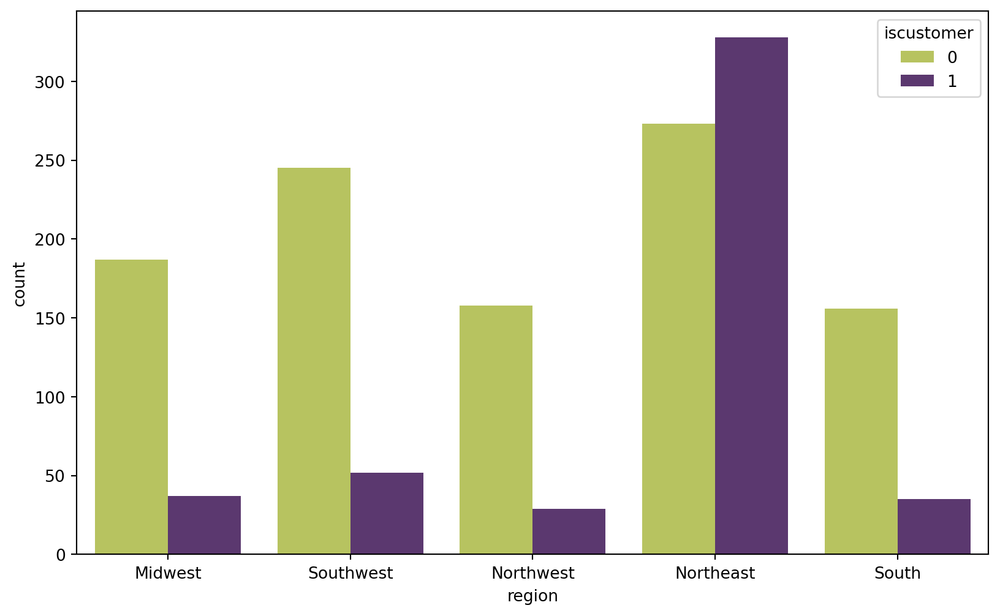
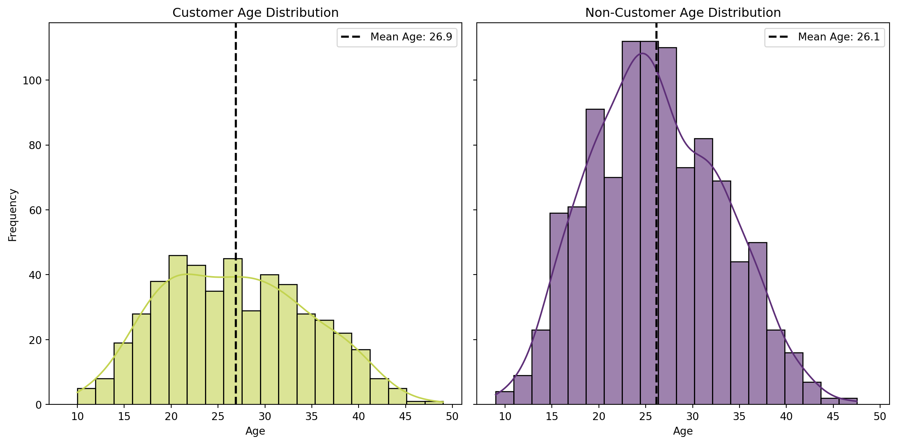

Poisson Regression and Maximum Likelihood Estimation
A Case Study of Blueprinty’s Software and Patent Awards
Introduction
Blueprinty is a small firm that makes software for developing blueprints specifically for submitting patent applications to the US patent office. Their marketing team would like to make the claim that patent applicants using Blueprinty’s software are more successful in getting their patent applications approved. The ideal dataset for studying such an effect would include each firm’s success rate before using Blueprinty’s software and after using it, but no such data is available. Instead, Blueprinty has collected data on 1,500 mature (non-startup) engineering firms. The data include each firm’s number of patents awarded over the last 5 years, regional location, age since incorporation, and whether or not the firm uses Blueprinty’s software. The marketing team wants to use this data to argue that firms using Blueprinty’s software are more successful in getting their patent applications approved.
However, this is a non-trivial claim to evaluate: Blueprinty’s customers are not selected at random, so any raw difference in patent counts could reflect characteristics of the firms (e.g., age, region) rather than the software itself. Why is this non-trivial? Because if customers tend to be older firms or firms located in regions with more patent activity, then they may have higher patent counts regardless of the software. To make a convincing argument, we need to account for these confounding factors and isolate the effect of using Blueprinty’s software on patent success.
Exploring the Data
We can construct two distribution histograms showing the number of patents awarded to customers and non-customers, and we can report the means of each group. This will give us a preliminary sense of whether there is an association between being a customer and having more patents, but we will need to be careful in interpreting these results because they do not account for potential confounding factors.
What Does the Data Show?
If we compare the two histograms, we are able to compare the means of the two groups. We see that the mean number of patents for customers is 4.133, while the mean number of patents for non-customers is 3.47. This suggests that customers of Blueprinty’s software have a higher average number of patents than non-customers. However, this raw difference does not account for potential confounding factors such as firm age and regional location, which may also influence patent counts.
Blueprinty’s customers are not selected at randoms, it may be important to account for systematic differences in firm age and regional location between customers and non-customers. To explore this, we can compare the distribution of regions by customer status and compare histograms of firm age by customer status. This will help us understand whether there are systematic differences in these characteristics between customers and non-customers, which could confound our analysis of the effect of using Blueprinty’s software on patent counts.
Histograms of Region by Customer Status
region Midwest Northeast Northwest South Southwest
iscustomer
0 187 273 158 156 245
1 37 328 29 35 52
Our preliminary analysis of the distribution of regions by customer status shows that there are some differences in regional location between customers and non-customers. For example, a higher proportion of customers are located in the Northeast and South regions compared to non-customers, while a higher proportion of non-customers are located in the Northwest region compared to customers. These regional differences could potentially confound our analysis of the effect of using Blueprinty’s software on patent counts, as certain regions may have more patent activity than others. Therefore, it is important to account for these regional differences in our subsequent analysis.
Histograms of Firm Age by Customer Status

Our preliminary analysis of the distribution of firm age by customer status shows that there are some differences in age between customers and non-customers. Customers tend to be older than the average non-customer with an average age of 26.9 compared to the non-customer with an average age of 26.1. There are a smaller number of firms for Blueprinty than non-customers.
A Simple Poisson Model via Maximum Likelihood
Note
The Poisson distribution is a discrete probability distribution that models the number of events occurring within a fixed interval of time or space, given a constant average rate of occurrence.
It is defined by a single parameter \(\lambda\), which represents the average number of events in the interval. The probability mass function (PMF) of the Poisson distribution is given by \[f(Y|\lambda) = \frac{e^{-\lambda}\lambda^{Y}}{Y!}\] where \(Y\) is the number of events (e.g., patents awarded) and \(Y!\) is the factorial of \(Y\). The Poisson distribution is often used for modeling count data, especially when the counts are non-negative integers and the mean is equal to the variance. In our case, the number of patents awarded to each firm over the last 5 years is a count variable, making the Poisson distribution a natural choice for modeling this outcome.
Now, let’s start the likelihood and log-likelihood derivation for a simple Poisson model where every firm has the same patent rate \(\lambda\).
We will show the derivation step by step to demonstrate how the joint likelihood is built from the iid assumption and how the log-likelihood simplifies.
Log Likelihood Derivation:
We start with the PMF (probability mass function) of the Poisson distribution for a single observation \(Y_i\): \[ f(Y|\lambda) = \frac{e^{-\lambda}\lambda^{Y}}{Y!} \]
Because the observations are independents, the joint likelihood \(L(\lambda)\) is the proudct of the inidiviudal probability mass functions for all \(n\) observations: \[ L(\lambda) = \prod_{i=1}^{n} f(Y_i|\lambda) = \prod_{i=1}^{n} \frac{e^{-\lambda}\lambda^{Y_i}}{Y_i!} = e^{-n\lambda} \lambda^{\sum_{i=1}^{n} Y_i} \prod_{i=1}^{n} \frac{1}{Y_i!} \]
A little note on the iid assumption:
Note
IID is a common assumption in statistical modeling that stands for “independent and identically distributed.” It means that the observations (in this case, the number of patents awarded to each firm) are independent of each other and come from the same probability distribution (in this case, a Poisson distribution with parameter \(\lambda\)). This assumption allows us to write the joint likelihood as a product of individual likelihoods for each observation.
If we expand the product across n terms, we get: \[ L(\lambda) = \frac{e^{-\lambda}\lambda^{Y_i}}{Y_i!} * \frac{e^{-\lambda}\lambda^{Y_2}}{Y_2!} * \cdots * \frac{e^{-\lambda}\lambda^{Y_n}}{Y_n!} \]
Multiplying \(e^{-\lambda}\) across n terms gives us \(e^{-n\lambda}\), and multiplying \(\lambda^{Y_i}\) across n terms gives us \(\lambda^{\sum_{i=1}^{n} Y_i}\). The product of the factorial terms is \(\prod_{i=1}^{n} \frac{1}{Y_i!}\).
This gives us the joint likelihood function for the Poisson model. \[ L(\lambda) = \frac{e^{-n\lambda} \lambda\prod_{i=1}^{n} Y_i}{\prod_{i=1}^{n} Y_i!} \]
To get us from the join likelihood to the log-likelihood, we take the natural logarithm of the likelihood function: \[ \ell(\lambda) = \ln(\frac{e^{-n\lambda} \lambda\prod_{i=1}^{n} Y_i}{\prod_{i=1}^{n} Y_i!}) \]
Using properties of logarithms, we can simplify this expression: \[ \ell(\lambda) = \ln(e^{-n\lambda}) + \ln(\lambda^{\sum_{i=1}^{n} Y_i}) - \ln(\prod_{i=1}^{n} Y_i!) \] By using the power rule of logarithms, we can further simplify the second term to retrive the final log-likelihood function. ### Final Log-Likelihood Function: \[ \ell(\lambda) = -n\lambda + \ln(\lambda) \sum_{i=1}^{n} Y_i - \sum_{i=1}^{n} \ln(Y_i!) \]
Coding the Log-Likelihood Function
Now that we know how to get derive the log-likelihood function, we can code it in Python. Below is an example of how to implement the Poisson log-likelihood function in Python:
import numpy as np
import scipy.special as special
def poisson_loglikelihood(lambda_, Y):
# n is the number of observations we get by taking the length of the Y vector
n = len(Y)
# The log-likelihood function is derived from the likelihood function we derived above, and we use the properties of logarithms to simplify it. We also use scipy's special.factorial function to compute the factorial of Y.
log_likelihood = -n * lambda_ + np.sum(Y) * np.log(lambda_) - np.sum(special.gammaln(Y + 1))
return log_likelihoodThis function takes in a scalar \(\lambda\) and a vector of observed counts \(Y\), and it computes the log-likelihood of the Poisson model given those inputs. The function first calculates the number of observations \(n\) from the length of the \(Y\) vector, and then it uses the formula for the log-likelihood that we derived earlier to compute the log-likelihood value. The scipy.special.gammaln function is used to compute the logarithm of the factorial of each element in \(Y\) efficiently.
Plotting the Log-Likelihood Function
Now that we have our log-likelihood function coded, we can plot it to visualize how the log-likelihood changes with different values of \(\lambda\). We will use the observed number of patents as the input for \(Y\) and plot \(\lambda\) on the horizontal axis and the log-likelihood on the vertical axis.

A Little Mathematical Fun - Finding the MLE Analytically
If we take the first derivative of the log-likelihood function with respect to \(\lambda\), set it equal to zero, and solve for \(\lambda\), we can find the maximum likelihood estimator (MLE) for \(\lambda\). The MLE turns out to be \(\hat\lambda_{\text{MLE}} = \bar{Y}\), which is the sample mean of the observed counts. This result makes intuitive sense because the mean of a Poisson distribution is equal to its parameter \(\lambda\), so it is reasonable that the MLE for \(\lambda\) would be the sample mean of the observed counts.
\[ \frac{d}{d\lambda}\ell(\lambda) = -n + \frac{1}{\lambda} \sum_{i=1}^{n} Y_i - \sum_{i=1}^{n} \frac{1}{Y_i!} \frac{d}{d\lambda}(Y_i!) \]
Intermediate steps: 1. The derivative of the first term \(-n\lambda\) with respect to \(\lambda\) is simply \(-n\). 2. The derivative of the second term \(\ln(\lambda) \sum_{i=1}^{n} Y_i\) with respect to \(\lambda\) is \(\frac{1}{\lambda} \sum_{i=1}^{n} Y_i\), using the chain rule of differentiation. 3. The derivative of the third term \(-\sum_{i=1}^{n} \ln(Y_i!)\) with respect to \(\lambda\) is zero because it does not depend on \(\lambda\).
Solving this equation for \(\lambda\) gives us the MLE: \[ \hat\lambda_{\text{MLE}} = \frac{1}{n} \sum_{i=1}^{n} Y_i = \bar{Y} \]
This means that the MLE for \(\lambda\) is simply the average number of patents awarded across all firms in the dataset.
Finding the MLE Numerically
Now we can find the MLE numerically by maximizing our log-likelihood function using Python’s scipy.optimize module. We will use the minimize function to find the value of \(\lambda\) that maximizes the log-likelihood. Since minimize minimizes a function, we will minimize the negative log-likelihood instead.
from scipy.optimize import minimize
# Function to minimize the negative log-likelihood
def negative_loglikelihood(lambda_):
return -poisson_loglikelihood(lambda_, Y)
# Minimize to find lambda that minimizes the negative log-likelihood
result = minimize(negative_loglikelihood, x0 = np.mean(Y), bounds=[(0.1, None)])
# Start at the sample mean and ensure lambda is positive
mle_lambda = result.x[0]
print(f"MLE for lambda: {mle_lambda}")
print(f"Sample mean (MLE): {np.mean(Y)}")MLE for lambda: 3.6846666666666668
Sample mean (MLE): 3.6846666666666668We see that the numerical MLE for \(\lambda\) is very close to the sample mean of \(Y\), which confirms our analytical result that the MLE for \(\lambda\) in a Poisson model is the sample mean of the observed counts. This is because the log-likelihood function is maximized at the point where \(\lambda\) equals the average number of patents awarded, which is consistent with the properties of the Poisson distribution.
Poisson Regression
Now we have a simple Poisson model where every firm has the same patent rate \(\lambda\). However, we know that firms differ in their characteristics (e.g., age, region, customer status), and these characteristics likely influence their patent counts. To account for this heterogeneity, we can extend our model to a Poisson regression model where each firm’s rate parameter \(\lambda_i\) depends on its own characteristics. \[ Y_i \sim \text{Poisson}(\lambda_i) \qquad \text{where} \qquad \lambda_i = \exp(X_i'\beta) \]
Why Do We Do This?
Instead of assuming every firm has the same patent rate \(\lambda\), we now let \(\lambda\) vary across firms as a function of age, region, and customer status. This allows us to capture the influence of these characteristics on patent counts and to isolate the effect of being a Blueprinty customer while controlling for other factors. We use \(\exp(\cdot)\) as the inverse link function because \(\lambda_i\) must be positive (since it represents a rate), but \(X_i'\beta\) can be any real number. The exponential function ensures that \(\lambda_i\) stays on the positive real line, which is necessary for the Poisson model to be valid. This is a key feature of Poisson regression: it models the log of the expected count as a linear function of the predictors, which allows for a multiplicative effect of the predictors on the expected count.
Updating the Log-Likelihood Function for Poisson Regression
Now we can update our log-likelihood function to take in a covariate matrix \(X\) and a parameter vector \(\beta\) in place of the scalar \(\lambda\). The log-likelihood for the Poisson regression model can be written as: \[ \ell(\beta) = \sum_{i=1}^{n} \left( -\exp(X_i'\beta) + Y_i X_i'\beta - \ln(Y_i!) \right) \]
This function takes into account the fact that each firm’s rate parameter \(\lambda_i\) is now a function of its characteristics through the linear predictor \(X_i'\beta\). The first term \(-\exp(X_i'\beta)\) represents the contribution of the expected count, the second term \(Y_i X_i'\beta\) represents the contribution of the observed count, and the third term \(-\ln(Y_i!)\) is the same as before, representing the contribution of the factorial term in the Poisson PMF. We can implement this log-likelihood function in Python as follows:
def poisson_regression_loglikelihood(beta, Y, X):
# Linear predictor X * beta
lin_pred = np.dot(X, beta)
# Expected mean: lambda = exp(X * beta)
expected_count = np.exp(lin_pred)
# Log-likelihood
log_likelihood = np.sum(-expected_count + Y * lin_pred - special.gammaln(Y + 1))
return log_likelihoodWe will construct \(X\) so that the first column is all 1’s (for the intercept), followed by columns for age, age squared, binary indicators for all but one of the regions, and the binary customer variable. We include age squared because the relationship between age and patenting is unlikely to be perfectly linear — it may be that very young firms and very old firms have lower patent counts than middle-aged firms. We must drop one region to avoid perfect collinearity with the intercept; if we included all regions, we would have a situation where the sum of the region indicators equals 1 for every observation, which would make it impossible to estimate the coefficients uniquely.
Finding MLE for Poisson Regression
Now we can use scipy.optimize.minimize to find the MLE \(\hat\beta\) for the Poisson regression model. We will minimize the negative log-likelihood function, and we will also ask the optimizer to return the Hessian so that we can compute standard errors for the coefficients. The standard errors are the square roots of the diagonal of the negative inverse Hessian.
Optimization terminated successfully.
Current function value: 3258.072145
Iterations: 39
Function evaluations: 36
Gradient evaluations: 35
Hessian evaluations: 34
Feature Coefficient Standard Error
Intercept -0.508920 0.183179
Age 0.148619 0.013869
Age^2 -0.002970 0.000258
Northeast 0.029170 0.043625
Northwest -0.017575 0.053781
South 0.056561 0.052662
Southwest 0.050576 0.047198
Customer 0.207591 0.030895Let’s check our results by fitting the same model Python’s statsmodels.api.GLM(). The coefficient estimates should match closely; the standard errors may differ slightly due to the numerical approximation of the Hessian, which is a common issue when using optimization routines to estimate standard errors. The exact values of the standard errors can be sensitive to the convergence criteria and the numerical precision of the optimization algorithm, so it’s not uncommon to see some discrepancies between different methods of estimation. However, as long as the coefficient estimates are consistent across methods, we can be confident in our findings.
Generalized Linear Model Regression Results
==============================================================================
Dep. Variable: y No. Observations: 1500
Model: GLM Df Residuals: 1492
Model Family: Poisson Df Model: 7
Link Function: Log Scale: 1.0000
Method: IRLS Log-Likelihood: -3258.1
Date: Sun, 17 May 2026 Deviance: 2143.3
Time: 23:47:00 Pearson chi2: 2.07e+03
No. Iterations: 5 Pseudo R-squ. (CS): 0.1360
Covariance Type: nonrobust
==============================================================================
coef std err z P>|z| [0.025 0.975]
------------------------------------------------------------------------------
const -0.5089 0.183 -2.778 0.005 -0.868 -0.150
x1 0.1486 0.014 10.716 0.000 0.121 0.176
x2 -0.0030 0.000 -11.513 0.000 -0.003 -0.002
x3 0.0292 0.044 0.669 0.504 -0.056 0.115
x4 -0.0176 0.054 -0.327 0.744 -0.123 0.088
x5 0.0566 0.053 1.074 0.283 -0.047 0.160
x6 0.0506 0.047 1.072 0.284 -0.042 0.143
x7 0.2076 0.031 6.719 0.000 0.147 0.268
============================================================================== Feature Manual Coefficient Manual SE Statsmodels Coefficient Statsmodels SE
Intercept -0.508920 0.183179 -0.508920 0.183179
Age 0.148619 0.013869 0.148619 0.013869
Age^2 -0.002970 0.000258 -0.002970 0.000258
Northeast 0.029170 0.043625 0.029170 0.043625
Northwest -0.017575 0.053781 -0.017575 0.053781
South 0.056561 0.052662 0.056561 0.052662
Southwest 0.050576 0.047198 0.050576 0.047198
Customer 0.207591 0.030895 0.207591 0.030895Interpreting the Results
Now that we have our coefficient estimates and standard errors, we can interpret the results. Each coefficient represents the log change in the expected count of patents for a one-unit increase in the corresponding predictor, holding all other predictors constant.
Intercept Coefficient: -0.509; This can be interpreted as the expected log count of patents for a firm with age 0, located in the baseline region (the one we dropped), and not being a customer.
Age Coefficient: 0.149 ; This suggests that, holding other factors constant, each additional year of age is associated with an increase in the log count of patents. Age^2 Coefficient: -0.003 ; This indicates that the relationship between age and patenting is not perfectly linear. Northeast Region Coefficient: 0.029; This suggests that firms located in the Northeast region have a higher expected log count of patents compared to the baseline region, holding other factors constant. Northwest Region Coefficient: -0.017; This suggests that firms located in the Northwest region have a lower expected log count of patents compared to the baseline region, holding other factors constant. South Region Coefficient: 0.05; This suggests that firms located in the South region have a higher expected log count of patents compared to the baseline region, holding other factors constant. Southwest Region Coefficient: 0.051; This suggests that firms located in the Southwest region have a higher expected log count of patents compared to the baseline region, holding other factors constant. Customer Coefficient: 0.208; This suggests that firms that are customers have a higher expected log count of patents compared to non-customers, holding other factors constant.
A quick check - are the signs and magnitudes sensible? The positive coefficient for age makes sense, as older firms may have more resources and experience to file patents. The negative coefficient for age squared also makes sense, as the relationship between age and patenting is likely to be non-linear. The regional coefficients suggest that location does matter for patenting activity, which is consistent with what we know about regional differences in innovation. Finally, the positive coefficient for being a customer of Blueprinty’s software suggests that there may be an association between using the software and having more patents, but we will need to be careful in interpreting this result due to potential confounding factors.
The Effect of Blueprinty’s Software
Because the coefficients from the Poisson regression are not the most interpretable as “additional patents,” (we interpreted them as log-rates) we will use our fitted model to construct a more interpretable estimate of the average effect of being a Blueprinty customer on patent counts, holding age and region fixed at their observed values for each firm.
First, we will create two counterfactual datasets: one where every firm’s iscustomer value is set to 0 (non-customer scenario) and one where every firm’s iscustomer value is set to 1 (customer scenario). Then, we will use our fitted model to predict the expected number of patents for every firm under each counterfactual scenario, producing two vectors of predicted counts: \(\hat{y}_0\) for the non-customer scenario and \(\hat{y}_1\) for the customer scenario. Finally, we will compute the average difference between these two vectors, \(\hat{y}_1 - \hat{y}_0\), to estimate the average effect of being a Blueprinty customer on patent counts.
Estimated average effect of being a Blueprinty customer on patent counts: 0.79Our Results
We can see that the estimated average effect of being a Blueprinty customer on patent counts is approximately 0.79 additional patents, holding age and region fixed at their observed values for each firm. This suggests that, on average, firms that are customers of Blueprinty’s software have about 0.79 more patents than they would if they were not customers, after controlling for age and regional differences. This privdes evidence consistent with Blueprinty’s marketing claim that their software is associated with higher patent counts. However, it is important to note that this analysis is based on observational data, and we cannot rule out the possibility of unobserved confounding factors that differ between customers and non-customers and could also drive patent counts. Therefore, while our findings are suggestive of a positive association between using Blueprinty’s software and having more patents, we cannot make a definitive causal claim based on this analysis alone.
Key Takeaways
- The Poisson distribution is a natural choice for modeling count data, such as the number of patents awarded to firms, because it is defined for non-negative integers and has the property that its mean is equal to its variance.
- The log-likelihood function for a Poisson model can be derived from the probability mass function, and the MLE for the rate parameter \(\lambda\) is the sample mean of the observed counts.
- Poisson regression allows us to model the expected count as a function of covariates, and the coefficients can be interpreted in terms of log changes in the expected count.
- When interpreting the results of a Poisson regression, it is important to consider the signs and magnitudes of the coefficients, as well as the potential for confounding factors in observational data. While we may find an association between being a customer of Blueprinty’s software and having more patents, we cannot make a definitive causal claim without ruling out the possibility of unobserved confounders.